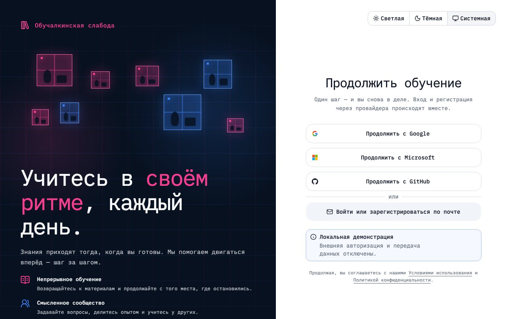
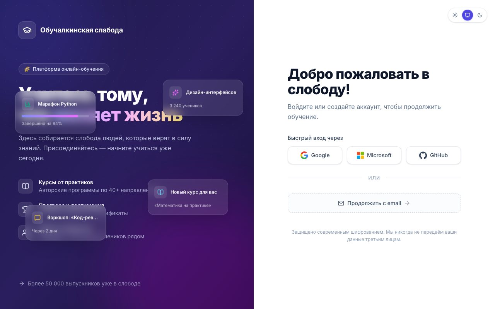
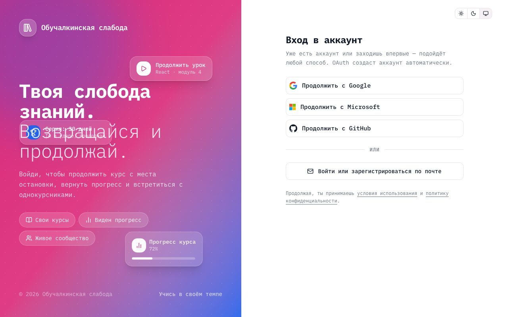
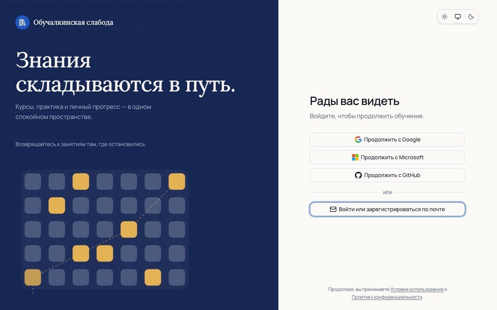
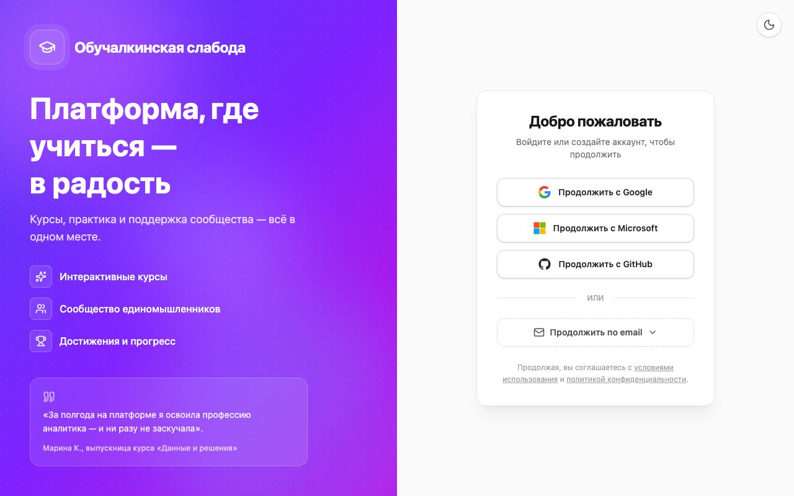
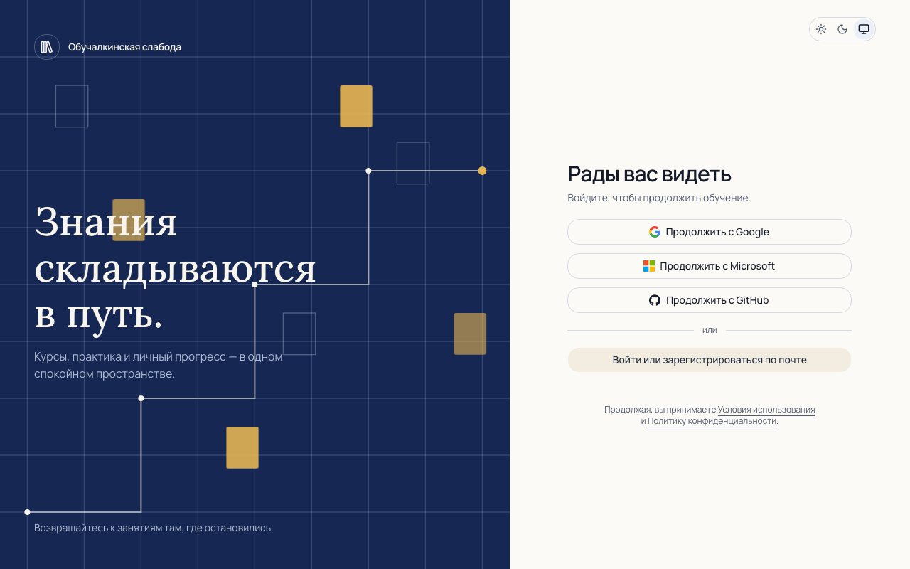
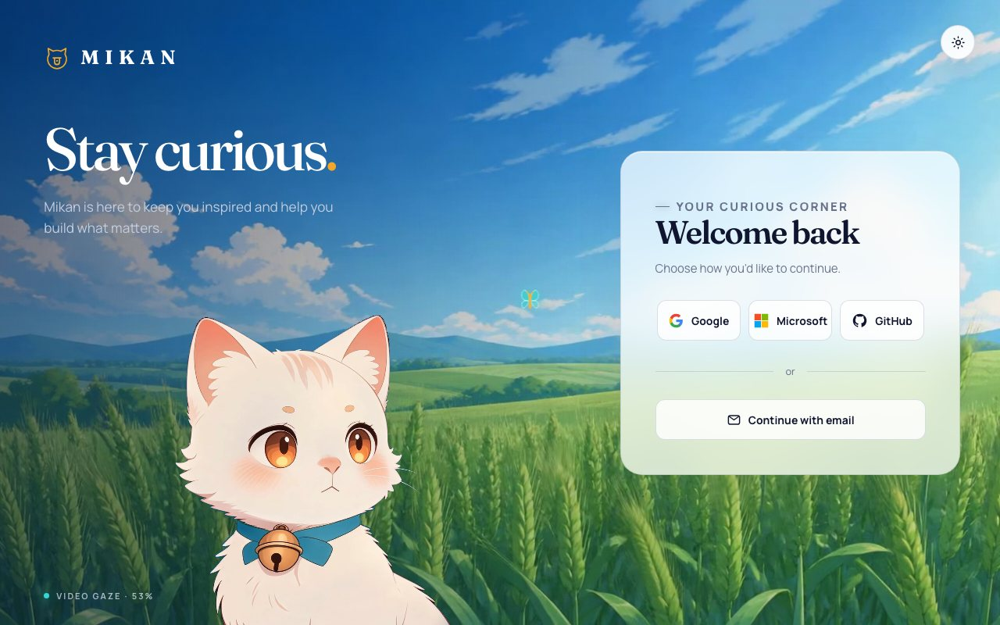

Один сценарий. Разные агенты.
Как модели, постановка задачи и подготовка контекста меняют один и тот же экран входа. Шесть реализаций, один анимационный кейс и один дизайн-handoff.
Результаты
8 независимых проектов
Codex · detailed
/codex-detailed/

DeepSeek · clean
/deepseek-clean/

DeepSeek · detailed
/deepseek-detailed/

DeepSeek · prepared
/deepseek-prepared/

Kimi · clean
/kimi-clean/

Kimi · prepared
/kimi-prepared/

Codex · anime case
/codex-anime/
Design handoffДокументы, токены и критерии приёмки
Kimi · design handoff
/kimi-design/